Inhalt Index DeskTop Bronstein

 Algebra und Diskrete Mathematik Klassische algebraische Strukturen Lie-Algebren
Algebra und Diskrete Mathematik Klassische algebraische Strukturen Lie-Algebren


Der CASIMIR-Operator C ist ein Operator, der mit allen Generatoren und deshalb auch mit allen Elementen der LIE-Algebra kommutiert. Er ist eine quadratische Form in den Generatoren.
| Beispiel | ||
|
Die Generatoren 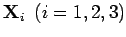 (s. (5.138)) der Gruppe SO(3) bilden eine Basis der reellen LIE-Algebra so(3) der LIE-Gruppe SO(3) mit den Elementen 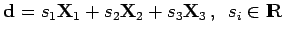. Wegen 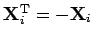 besteht die LIE-Algebra so(3) aus allen schiefsymmetrischen 3 x 3-Matrizen, 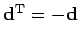. Zwischen den Generatoren gelten die Vertauschungsrelationen
d.h. die von Null verschiedenen Strukturkonstanten der LIE-Algebra so(3) sind |
Hinweis: Die Elemente der LIE-Algebra können geometrisch als Tangentialvektoren 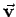 aller Kurven 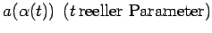 in G durch das neutrale Element e aufgefaßt werden. Sind 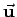 und die Tangentialvektoren zweier Kurven 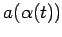 und 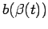 dann ist der Kommutator 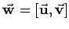 als Tangentialvektor der Kurve 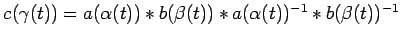 definiert.
Mit der Einführung der LIE-Algebra wird die Untersuchung einer globalen LIE-Gruppe auf die Untersuchung ihrer lokalen Struktur in der Umgebung des neutralen Elements zurückgeführt, wobei Methoden der Analysis angewandt werden können.